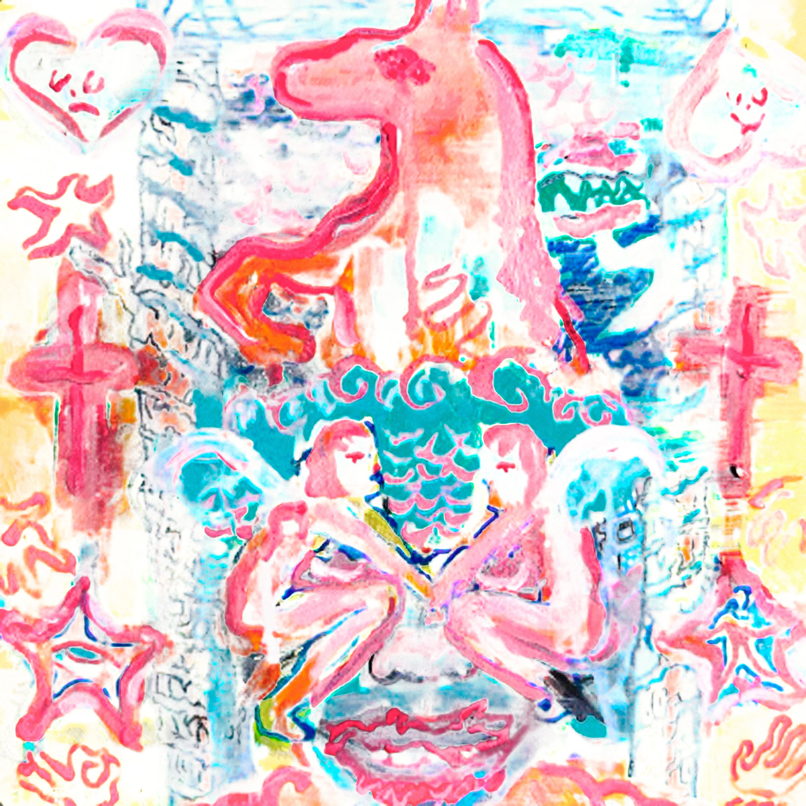
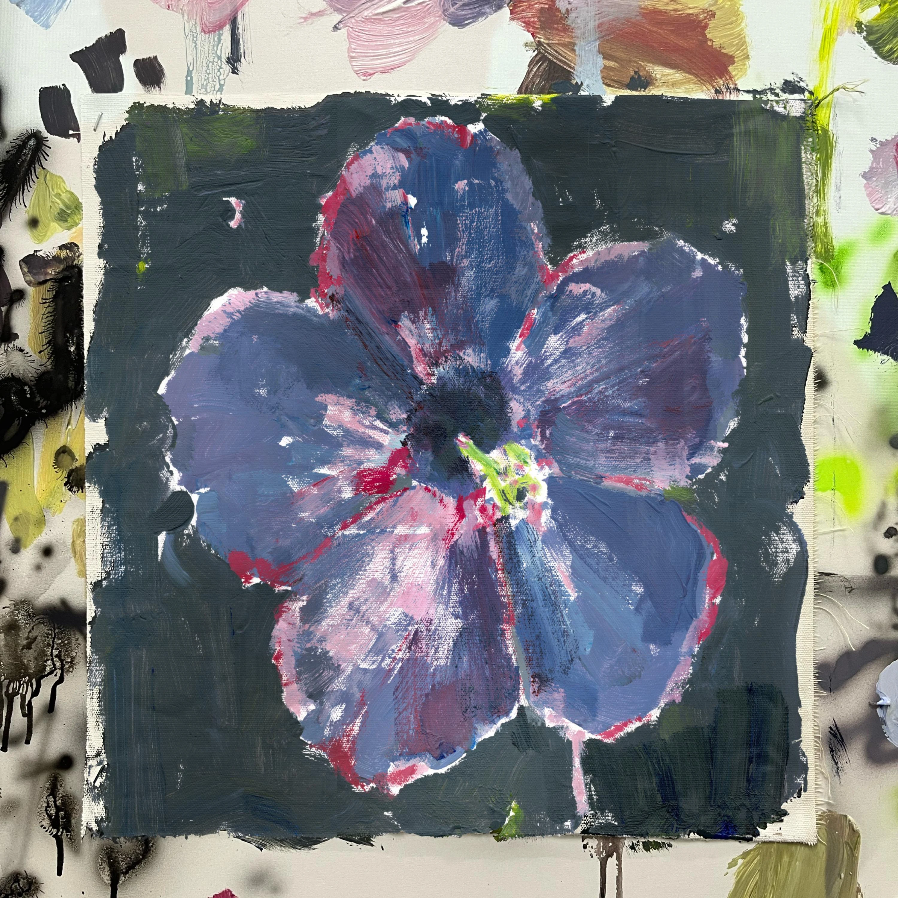
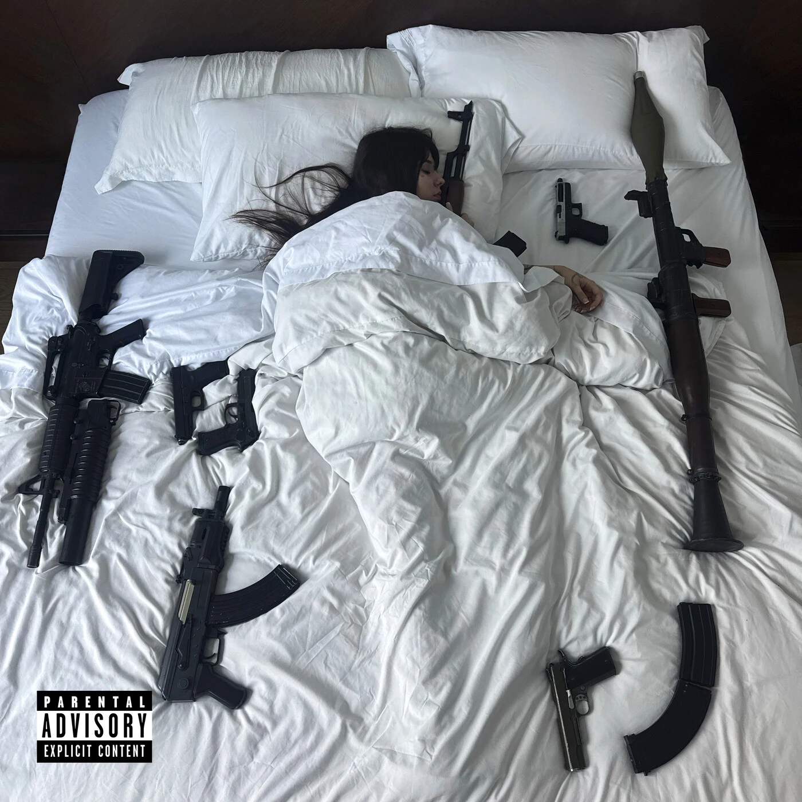
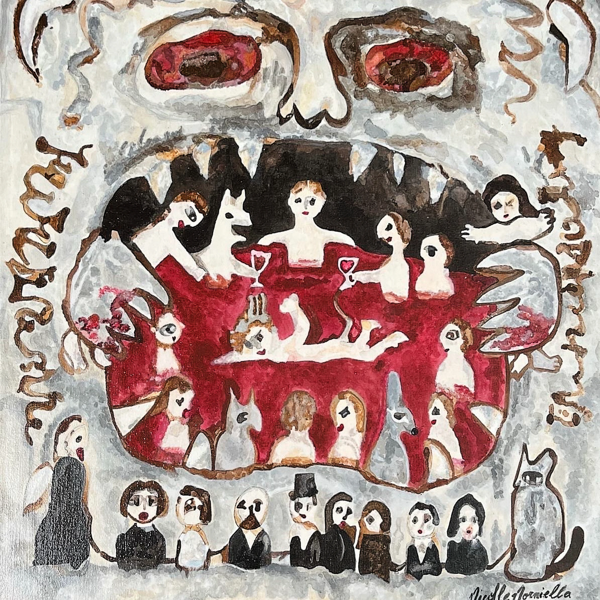
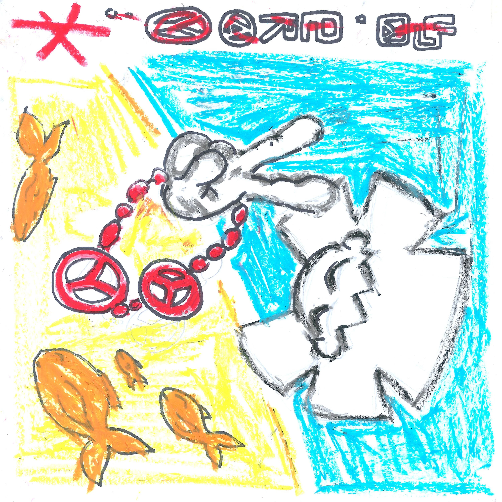
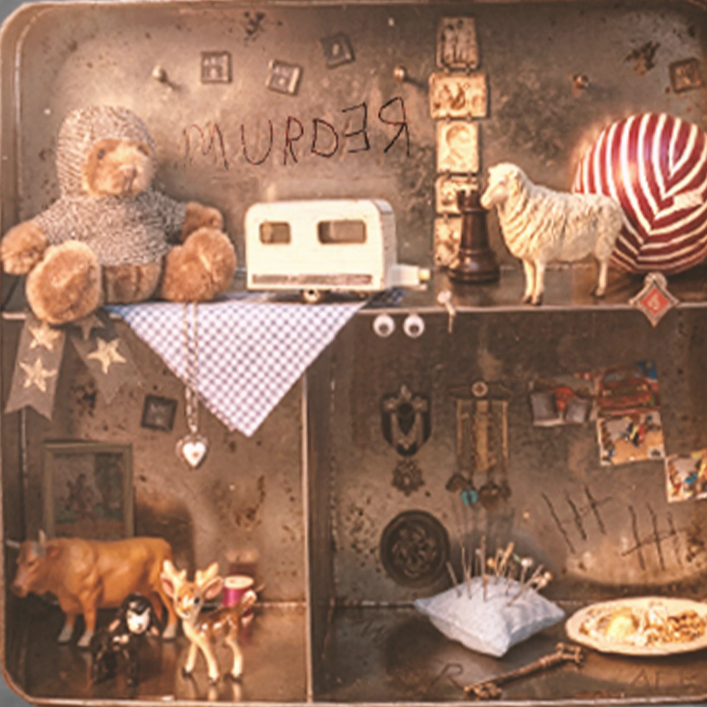

ENERO!1
DICIEMBR31

El Show Debe Continuar
-salas flaco

after fœ
-cero*
A Todo Ritmo
-zé pequeña

MATADEROS
-Saramalacara
De vuelta solo
-Enzocerobulto

Una Pesadilla
-salas flaco
PERDIENDO RASGOS ADOLESCENTES
-Swaggerboyz

yo pray .
-cero*

murder
-afkGOAT